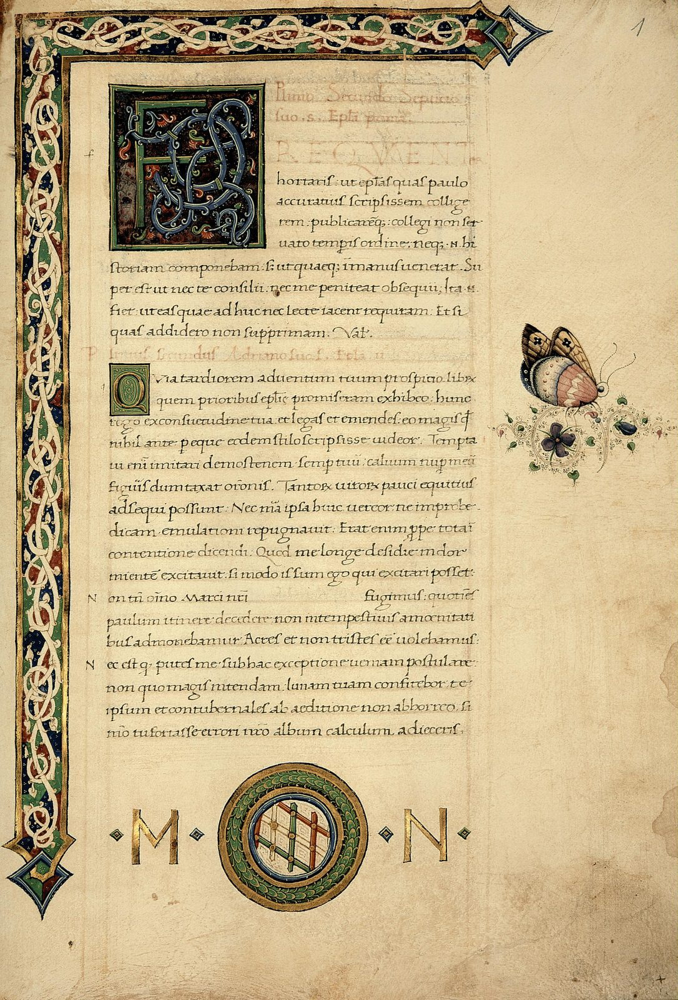

Unit 6 · Slavery in ancient Rome · Lesson 8
Masters and the enslaved: Pliny the Younger and the murder of Pedanius Secundus
How did owners write about the people they enslaved when one of their own was killed, and whose voices do we never hear?
Year 11 Ancient History · Present with → or space · Read on a phone with R

Connect · 3 minutes · books closed · everyone writes
One Lesson 7 writer, accounted for in one line
Choose one writer from Lesson 7: Cato, a speaker in Varro’s dialogue, Columella or Seneca. Attribute his view, then explain it from his context or purpose.
Frame if you need it: “[Writer], a … writing for …, presents … as … because …”
Today’s writers are owners too. Keep the same question in mind: who is speaking, to whom, and why?
| Writer | What Lesson 7 taught |
|---|---|
| Cato | An owner advising owners on a farm. In one passage he lists “an old slave, a sickly slave” with worn-out oxen and old tools as things to sell. |
| Varro’s speaker | A speaker in a dialogue about farming reports a scheme that “others” use, which puts enslaved people with cattle and carts. It is not shown to be Varro’s own view. |
| Columella | An owner who says he talks and jests with the country workers and asks their advice, and who also plans an underground prison for those in chains. |
| Seneca | A Stoic philosopher writing to his friend Lucilius, an owner. He urges kinder treatment, but, as Bradley (1989) argues, he did not call for an end to slavery. |
A good line names the writer, gives a piece of context, uses a reporting verb (not “says”), and has a “because” that comes from his position or purpose.
Learning intentions and success criteria · 2 minutes
Today’s goals
- analyse the relationships between owners and enslaved people
- plan in five minutes and write a timed paragraph
- explain how Pliny presents his relationships with enslaved and freed people
- explain the Pedanius case and the different reactions to it
- make a five-minute plan and write a full paragraph in 12 minutes
Syllabus outcomes: AH-11-03 explains the role and significance of forces, features, events, individuals and groups in shaping the past · AH-11-04 accounts for the different perspectives of individuals and groups in their historical context · AH-11-07 communicates historical understanding, applying historical knowledge, terms and concepts. Life Skills: AH-LS-07 identifies different perspectives of the past · AH-LS-11 communicates information about the past using historical terms and concepts.
Note-making · the routine for the whole course
How to structure your notes
questions and key terms, written after
short phrases, arrows (→ leads to), abbreviations (c. = about; ↔ = compared with)
- 1A new pageA cue column about a quarter of the page wide; title and date at the top; room for a summary at the bottom.
- 2Listen and look, then writePhrases, not sentences. Today, for every source: who wrote it, to whom, and whose voice is missing.
- 3Write your own notes at the ✎ checkpointThen compare with the model notes, one row at a time. Add what you missed in a second colour.
- 4Write the cue questions afterwardsUse exam verbs: explain, account for. To revise, cover your notes and answer the cues.
- 5Finish with a three-sentence summaryOne checkpoint today: Pliny’s two letters. The perspectives map in your booklet is your notes for the Pedanius case.
Key vocabulary · add to the unit word wall
Words for owners, officials and plans
| From the unit list | Meaning |
|---|---|
| Assess (NESA) | NESA, Glossary of key words: ‘Make a judgement of value, quality, outcomes, results or size.’ Department advice: make and support a judgement. |
| Perspective | A point of view shaped by a person’s position, purpose and audience. |
| Five-minute plan | A plan made on the clock: deconstruct the question, make a judgement, choose three points, find evidence for each and name one counter-view. |
| Owner / master | The person who legally owned an enslaved person; the syllabus says ‘masters’. |
| Added today | Meaning |
|---|---|
| Manumit | To free an enslaved person. The person freed is a freed person. |
| City prefect | A senior official in charge of the city of Rome. Pedanius Secundus held the post in 61 CE. |
| Senate | The council of senior Romans, which debated issues and voted on decrees; in 61 CE it voted on this case. |
| Counter-view | The strongest case against your own judgement, which a plan names so the paragraph can weigh it. |
1 · Pliny’s letters · I do — think aloud · a letter to a friend, after a sickness in his household · 2 minutes
Pliny, 8.16: what does he say he does?
One is, that I have always very readily manumitted my slaves (for their death does not seem altogether immature, if they lived long enough to receive their freedom); the other, that I have allowed them to make a kind of will, which I observe as religiously as if it were good in law.
Others, I know, describe misfortunes of this kind by no higher term than “a pecuniary loss,” and fancy they thereby shew themselves men of sense and spirit.
Pliny the Younger, Letters 8.16, to Paternus (Pliny’s letters date from about 97–112 CE) · trans. W. Melmoth, revised by W. M. L. Hutchinson (Loeb, 1915)
- 1Who wrote it, and to whomPliny, a Roman senator and an owner, to his friend Paternus, after a sickness that carried off several people in his household.
- 2What he says he doesHe says he has “always very readily manumitted” them, and lets them “make a kind of will”.
- 3What he sets against other ownersOthers, he says, call such deaths “a pecuniary loss”: he does not.
- 4What to be careful ofThis is Pliny’s own account of himself. The letter gives none of their words.
How does Pliny present himself here, and whose voice is missing?
He presents himself as a generous owner who frees people readily, lets them make a kind of will, and grieves when they die, unlike owners who see only “a pecuniary loss”. It is his own account to a friend. The enslaved people’s own words are missing: we learn what he says he allows, not what they thought.
1 · Pliny’s letters · I do — think aloud · a letter to a friend, on a murdered owner · 2 minutes
Pliny, 3.14: what does he warn owners of?
The horrid barbarity which the slaves of Larcius Macedo, a person of Praetorian rank, lately exercised upon their master, is so extremely tragical, that it deserves to be the subject of something more considerable than a private letter; though at the same time it must be acknowledged, there was a haughtiness and severity in his treatment of them, which shewed him little—nay, I should rather say, too—mindful that his own father was once in the same station.
In between Pliny tells how Macedo’s enslaved men attacked him as he bathed at his villa near Formiae, and how he died a few days later. The attack is not quoted here.
Thus you see to what indignities, outrages, and dangers we are exposed. Nor is lenity and good treatment any security from the villainies of your servants; for it is malice, and not reflection that arms such ruffians against their masters.
Pliny the Younger, Letters 3.14, to Acilius · trans. W. Melmoth, revised by W. M. L. Hutchinson (Loeb, 1915)
- 1Who wrote it, and to whomPliny to his friend Acilius, about Larcius Macedo, a man of praetorian rank.
- 2What he admits about Macedo“a haughtiness and severity in his treatment of them”.
- 3What he concludes for his readers“Nor is lenity and good treatment any security”: he says even good treatment gave owners no safety.
- 4What he says moved the attackers“malice, and not reflection”: their reasons are Pliny’s description, not their own words.
What does Pliny admit about Macedo, and what does he want his readers to take from the letter?
He admits Macedo’s “haughtiness and severity”, yet he concludes that “lenity and good treatment” give owners no “security”, because, he says, the attackers acted from “malice, and not reflection”. He wants his readers, fellow owners, to see the danger they face. The attackers’ own reasons are not given.
1 · Pliny’s letters · I do — side by side · 1½ minutes
What does each letter reveal about Pliny and his readers?
Compare the two letters in pairs: what picture does each give of Pliny, who are his readers, and whose words are missing?
| 8.16 to Paternus | 3.14 to Acilius | |
|---|---|---|
| Pliny’s picture | A generous owner who says he frees people readily, lets them make a kind of will and grieves. | An owner who admits Macedo’s severity, and who warns owners of danger. |
| His perspective | He sees the household through his own generosity and grief, as an owner. | He sees the attack as a danger to owners, and gives the attackers’ motive as “malice”. |
| His readers | A friend, probably an owner too. Pliny prepared Books 1–9 for publication, and Joshel calls the letters “meticulously composed”, so he wrote for a wider circle as well. | A friend, probably an owner too, and the same wider circle of readers. |
| Whose words are missing | The enslaved and freed people’s: he describes their “wills” but quotes none. | The attackers’: Pliny gives their motive, not their words. |
Notes checkpoint · I do · 1½ minutes · cue: what does each letter show?
What do Pliny’s two letters show?
2 · The Pedanius case · We do — supported reading (1 of 2) · 2½ minutes · underline each group’s words, circle what it wants or fears, box who is never quoted
Tacitus on the murder of Pedanius Secundus, 61 CE
Soon afterwards one of his own slaves murdered the city-prefect, Pedanius Secundus, either because he had been refused his freedom, for which he had made a bargain, or in the jealousy of a love in which he could not brook his master's rivalry. Ancient custom required that the whole slave-establishment which had dwelt under the same roof should be dragged to execution, when a sudden gathering of the populace, which was for saving so many innocent lives, brought matters to actual insurrection. Even in the Senate there was a strong feeling on the part of those who shrank from extreme rigour, though the majority were opposed to any innovation.
Tacitus, Annals 14.42, early 2nd century CE, on the murder of the city prefect in 61 CE · trans. A. J. Church and W. J. Brodribb (1876)
… Who will be kept safe by the number of his slaves when four hundred have not protected Pedanius Secundus? … Was the murderer, as some do not blush to pretend, avenging his wrongs because he had bargained about money from his father or because a family-slave was taken from him? Let us actually decide that the master was justly slain.
Tacitus, Annals 14.43, in the speech he gives Gaius Cassius · trans. A. J. Church and W. J. Brodribb (1876)
Tacitus calls the rule “Ancient custom” and, in Cassius’s speech, “the Senate’s decree”. He does not name the decree (Lesson 6).
Whose voice is the speech, and who is reporting it?
Cassius’s voice, as Tacitus gives it. Tacitus wrote the Annals in the early 2nd century CE, long after 61 CE, and composed the speech, so “four hundred” is a figure in a speech Tacitus wrote: it may be accurate, or chosen for effect.
2 · The Pedanius case · We do — supported reading (2 of 2) · 2½ minutes · underline each group’s words, circle what it wants or fears, box who is never quoted
Cassius’s argument, and what followed
… But now that we have in our households nations with different customs to our own, with a foreign worship or none at all, it is only by terror you can hold in such a motley rabble. But, it will be said, the innocent will perish. … There is some injustice in every great precedent, which, though injurious to individuals, has its compensation in the public advantage.
Tacitus, Annals 14.44, in the speech he gives Gaius Cassius · trans. A. J. Church and W. J. Brodribb (1876)
No one indeed dared singly to oppose the opinion of Cassius, but clamorous voices rose in reply from all who pitied the number, age, or sex, as well as the undoubted innocence of the great majority. Still, the party which voted for their execution prevailed. But the sentence could not be obeyed in the face of a dense and threatening mob, with stones and firebrands. Then the emperor reprimanded the people by edict, and lined with a force of soldiers the entire route by which the condemned had to be dragged to execution. Cingonius Varro had proposed that even all the freedmen under the same roof should be transported from Italy. This the emperor forbade, as he did not wish an ancient custom, which mercy had not relaxed, to be strained with cruel rigour.
Tacitus, Annals 14.45 · trans. A. J. Church and W. J. Brodribb (1876)
Who reacts to Cassius, and how does each react?
Voices “from all who pitied” the household protest; the majority vote prevails; a “dense and threatening mob” stops the sentence being obeyed; the emperor reprimands the people, lines the route with soldiers and refuses to transport the freedmen from Italy. Tacitus reports each group; he gives no words from the enslaved household.
We do — pairs fill in the perspectives map in your booklet · 4 minutes, then who is never heard · 1 minute
The perspectives map: Annals 14.42–45
For each group: what position does Tacitus give it, in his translators’ words, and who is telling us?
| Group | Its position, in Tacitus’s words | Who tells us |
|---|---|---|
| The owner, Pedanius Secundus | Killed by “one of his own slaves”; Cassius mocks those who excuse the murderer: accepting his motive would be to decide that “the master was justly slain”. | Tacitus and Cassius: the owner never speaks. |
| Cassius, a senator | The household must die: “it is only by terror you can hold in such a motley rabble”. | Tacitus, in a speech he composed. |
| Senators who pitied them | “clamorous voices” from “all who pitied the number, age, or sex”; the majority still vote for execution. | Tacitus; no one is named or counted. |
| The crowd | “a sudden gathering of the populace, which was for saving so many innocent lives”; later “a dense and threatening mob, with stones and firebrands”. | Tacitus. |
| The emperor | Reprimands the people, lines the route with soldiers, and forbids transporting the freedmen from Italy. | Tacitus. |
Who is never heard, and what do we learn about them instead?
The enslaved household. We have two guesses at the murderer’s motive (“either … or”), a senator’s dismissal of it, and a round figure of “four hundred”. We learn what senators, the crowd and the emperor feared, pitied or decided, not what the household said or wanted.
3 · You do · Writing focus · 8 minutes · I do → We do → apply
Writing focus: a plan you can make in five minutes
A plan has five steps on a five-minute clock: deconstruct → judgement → three points → evidence → one counter-view.
Worked plan · written for this lesson · on a different question (Seneca, Epistle 47, a letter of advice to his friend Lucilius)
Question: Assess how far Seneca’s Epistle 47 challenged owners’ treatment of enslaved people.
1 · Deconstruct (1 min): assess · “how far” asks for a degree · Epistle 47 only · a judgement against a counter-view
2 · Judgement (1 min): Epistle 47 challenged owners’ cruelty, but only to a limited extent.
3 · Points and 4 · evidence (2 min): (1) he calls them men: “Nay, rather they are men” (47.1) · (2) he criticises the rod at dinner: “The slightest murmur is repressed by the rod” (47.3) · (3) he asks for kinder behaviour: “Treat your inferiors as you would be treated by your betters” (47.11), advice, not abolition (Bradley, 1989, p. 102)
5 · Counter-view (1 min): “we make them enemies” (47.5) blames owners directly
Same question, points and counter-view; step 1 names the verb. Step 2 reads “Seneca challenged owners’ treatment of enslaved people.” Which step needs fixing first?
- AStep 1: the verb is not named.
- BStep 2: the judgement has no degree.
- CStep 3: the points have no evidence.
- DStep 5: the counter-view repeats a point.
“Challenged” is a yes or no, but the question asks how far. Add a degree (“only to a limited extent”). A, C and D describe steps the plan already does.
Teacher keeps time: one minute. Do step 1: verb, topic, limits, do.
Assess the relationship between owners and enslaved people shown in these sources.
Your Writing toolkit (booklet pages 3–4): the verb table and the four-step routine.
3 · You do · your evidence for the timed paragraph · printed in your booklet
Your two-case sheet: Pliny’s household, and Pedanius’s
I have always very readily manumitted my slaves
I have allowed them to make a kind of will, which I observe as religiously as if it were good in law
Others, I know, describe misfortunes of this kind by no higher term than “a pecuniary loss,”
there was a haughtiness and severity in his treatment of them
Nor is lenity and good treatment any security from the villainies of your servants
Pliny the Younger, Letters 8.16 (to Paternus) and 3.14 (to Acilius), about 97–112 CE · trans. W. Melmoth, revised by W. M. L. Hutchinson (Loeb, 1915)
Ancient custom required that the whole slave-establishment which had dwelt under the same roof should be dragged to execution
it is only by terror you can hold in such a motley rabble
clamorous voices rose in reply from all who pitied the number, age, or sex
a dense and threatening mob, with stones and firebrands
Then the emperor reprimanded the people by edict, and lined with a force of soldiers the entire route
Tacitus, Annals 14.42–45, early 2nd century CE (14.44 is in the speech he gives the senator Gaius Cassius) · trans. A. J. Church and W. J. Brodribb (1876)
Whose voices are these? Pliny, an owner writing to friends, and Tacitus, a senator writing more than 50 years after the events, reporting a speech he composed. No source on this sheet is written by an enslaved person.
3 · You do · 17 minutes · plan for 5 (press K, click 5) · then write for 12 (press K, click 12)
Assess the relationship between owners and enslaved people shown in these sources.
What does this question ask you to do? Check your deconstruction.
- Verb
- assess: NESA, Glossary of key words: ‘Make a judgement of value, quality, outcomes, results or size.’ Department advice: judge what kind of relationship these sources show, and how far
- Topic
- the relationship between owners and enslaved people as these sources show it, not how every owner and enslaved person lived
- Limits
- the two cases on your two-case sheet only: Pliny’s letters 8.16 and 3.14, and Tacitus, Annals 14.42–45
- Do
- a judgement with a degree; evidence from both cases, with each writer’s position and audience; a counter-view weighed; what these sources cannot show
Write your plan on your planning template in the first 5 minutes of writing time. In the HSC, reading time is for thinking only. NESA’s 2027 HSC student guide says: “You must not write on or mark your exam in any way or use any equipment (including highlighters).”
- Plan (5 minutes): deconstruct 1 · judgement 1 · three points with evidence 2 · one counter-view 1.
- Write (12 minutes): one paragraph, Judge → Evidence → Analyse → Evaluate → Resolve: your degree, both cases with their writers, what the evidence shows, your counter-view or what the sources cannot show, and your degree again.
Plan template: a box for each step. Frame for the Judge only: “These sources show a relationship that was … to a … extent, because …” Quotation bank: your two-case sheet.
Pliny prepared Books 1–9 of his letters, including these two, for publication. Using Joshel’s reading, evaluate how far they are evidence of his relationships rather than of the image he wished to project. Joshel (2011, p. 234): Pliny “makes slaves visible only to make disappear important components of their condition”.
3 · Check · untimed revision · 6 minutes
Revise your paragraph
- Reread your whole paragraph once.
- Tick the checklist. Where you cannot tick, mark the gap.
- Improve one move, in your second colour: rewrite one sentence.
Your Writing toolkit (booklet pages 3–4): connectives by function and the modality scale.
A judgement of degree on the relationship these sources show, not a yes or no, held from the first sentence to the last. Evidence from both cases, each source named with its writer and audience. The views of owners, a senator, a crowd and an emperor attributed to the people who hold them, not stated as facts about all owners. A counter-view or limit weighed, including that the enslaved people’s own words are missing. A closing sentence that keeps the same degree.
3 · Check · partner feedback · 4 minutes
One warm comment and one cool comment
- Read your partner’s paragraph once, in silence (1 minute).
- Tell your partner one warm comment: one move they did well, and where (1 minute).
- Tell your partner one cool comment: one move to improve next time, and how (1 minute).
- Swap, and write your partner’s cool comment on your own paragraph (1 minute).
Warm: “Your … is strong, because …”
Cool: “Next time, try … in your …, so that …”
Exit ticket · 2 minutes · before you leave
Your pacing ticket
Finish the sentence: “In 12 minutes I ran short on … so next time I will …”
A specific part of the plan or the paragraph (the judgement, the evidence, the counter-view, the ending), not just “time”. A change you can make: for example, cutting the plan to its five steps, deciding the degree before writing, or leaving the quotation bank closed after planning. A change that matches the problem.
Then check yourself against today’s three “I can” statements. Next lesson: Lesson 9, treatment: food, punishment, chains and sale.
Finish your notes If time · or at home
Summary: three sentences
- What does each of Pliny’s two letters say about the people he enslaved or frees, and who are his readers?
- Whose voices does Tacitus report after the murder of Pedanius Secundus, and whose is missing?
- What are the five steps of the five-minute plan?
In 8.16 Pliny, writing to a friend, says he has always readily freed people and lets them make a kind of will, and in 3.14 he warns his readers that even good treatment gave owners no security; both letters are by an owner, for readers who were probably owners too, and neither gives the words of an enslaved person. Tacitus reports a senator arguing for terror, voices of pity, a crowd and an emperor with soldiers, but no word from the enslaved household. A five-minute plan has five steps: deconstruct, make a judgement, choose three points, find evidence for each, and name one counter-view.
Practice and review · 1 of 4 · true, false, justify
True or false? Justify your answer
- 1In 8.16, Pliny says he has “always very readily manumitted” the people he enslaved. True — it is his own claim about his habit, in a letter to a friend; it does not tell us what the people thought.
- 2In 3.14, Pliny says Larcius Macedo’s treatment of his household was gentle. False — he admits “a haughtiness and severity in his treatment of them”, and still concludes that good treatment is no “security”.
- 3Tacitus gives us the enslaved household’s own words after the murder of Pedanius Secundus. False — he reports a senator, other voices, a crowd and the emperor; the household’s words are missing, and the murderer’s motive is given only as two possibilities (“either … or”).
- 4Cassius’s speech is a word-for-word record of what he said in the Senate in 61 CE. False — Tacitus wrote the Annals long afterwards and composed the speech; so “four hundred” is a figure in a speech he wrote, which may be accurate or chosen for effect.
- 5Tacitus calls the rule “Ancient custom” and, in Cassius’s speech, “the Senate’s decree”. True — he does not give the decree a name.
- 6A five-minute plan has no counter-view, because the paragraph supplies it. False — the plan’s fifth step names one counter-view, so the paragraph can weigh it.
Practice and review · 2 of 4 · planning
Plans: fix one, make one
Question: Assess how far Seneca’s Epistle 47 challenged owners’ treatment of enslaved people. A student’s plan: “Judgement: Seneca challenged owners’ treatment. Points: 47.1, 47.3, 47.11. Evidence: none. Counter-view: none.” List what is missing, step by step.
Step 2 needs a degree (not “challenged” alone). Step 3 needs each point to say what it shows. Step 4 needs a short quotation for each point. Step 5 needs one counter-view. Step 1, the deconstruction, is not written at all.
Set a five-minute timer. Make a five-step plan for: Assess how far Columella 1.8.15 shows kindness to enslaved workers. Use your Lesson 7 notes.
Practice and review · 3 of 4 · extension
Evidence of his relationships, or of an image?
Pliny prepared Books 1–9 of his letters, including these two, for publication. Using Joshel’s reading, evaluate how far they are evidence of his relationships rather than of the image he wished to project.
An instance of Roman self-fashioning, these meticulously composed letters craft a portrait of the self and its world, shaped by a network of unequal power and authority – including the relations of master and slave. … Pliny, like paternalism itself, makes slaves visible only to make disappear important components of their condition, either consuming their agency or rendering it invisible.
S. R. Joshel, “Slavery and Roman literary culture”, in K. Bradley and P. Cartledge (eds), The Cambridge World History of Slavery, vol. 1 (Cambridge University Press, 2011), p. 234. “Slaves” is her word.
It names a criterion (evidence of what, for whom?), then weighs both sides: what the letters can show about relationships (a friend, a household and what he says he allows) against what Joshel says they do (craft a portrait of the self, and show enslaved people only on the owner’s terms). It checks the claim against specific wording in 8.16 and 3.14 and notes what no letter shows. It ends with a degree, not a yes or no.
Practice and review · 4 of 4 · cover your notes and answer from memory
Quick checks
- What does Pliny say in 8.16 that he has always done, and what does he let the people he enslaves do? He says he has “always very readily manumitted” them, and has allowed them to make “a kind of will”. It is his own account, in a letter to a friend.
- What does Pliny admit about Macedo in 3.14, and what does he conclude for owners? He admits “a haughtiness and severity in his treatment of them”, yet concludes that “lenity and good treatment” are no “security”.
- Whose speech is Annals 14.43–44, and who reports it? The senator Gaius Cassius’s, as Tacitus gives it; Tacitus composed it, writing in the early 2nd century CE about 61 CE.
- Which groups react to Cassius in 14.45, and who is never heard? Voices that pitied the household, a crowd, and the emperor. The enslaved household is never heard.
- What are the five steps of the five-minute plan, and how long does each take? Deconstruct (1 minute), judgement (1), three points with evidence for each (2), one counter-view (1).
- What does Joshel (2011, p. 234) call Pliny’s letters? “meticulously composed” letters that “craft a portrait of the self and its world”.
Sources and credits
Where everything comes from
Pliny the Younger, Letters 3.14 and 8.16: trans. W. Melmoth, revised by W. M. L. Hutchinson (Loeb Classical Library, 1915, public domain), archive.org (vol. I) and archive.org (vol. II). Tacitus, Annals 14.42–45: trans. A. J. Church and W. J. Brodribb (1876, public domain), Perseus Digital Library (Perseus text CC BY-SA 3.0 US). Seneca, Letters to Lucilius (Epistle) 47, parts: trans. R. M. Gummere (Loeb, vol. I, 1917, public domain), Wikisource (text CC BY-SA 4.0).
Modern historians, quoted briefly: K. R. Bradley, Slavery and Rebellion in the Roman World, 140 B.C.–70 B.C. (Indiana University Press, 1989), p. 102; S. R. Joshel, “Slavery and Roman literary culture”, pp. 220–221 and 234, in K. Bradley and P. Cartledge (eds), The Cambridge World History of Slavery, vol. 1 (Cambridge University Press, 2011). Wikipedia, “Epistulae (Pliny)”, for the books Pliny prepared for publication. The NESA Glossary of key words (definitions quoted word for word) and the NESA 2027 HSC student guide, p. 19 (step 3, “Reading time”).
Outcomes and content: NSW Education Standards Authority (NESA), Ancient History 11–12 Syllabus (2024). © NESA.
- The beginning of Pliny’s Letters in a 15th-century manuscript, Biblioteca Malatestiana, Cesena (Ms. S.XX.2, fol. 1r) · Photo: not named on the file page (Wikimedia Commons) · Public domain · source

All images are public domain or openly licensed, and were resized for the web. Each is shared under the licence shown.